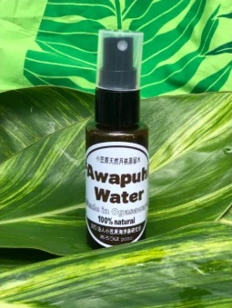
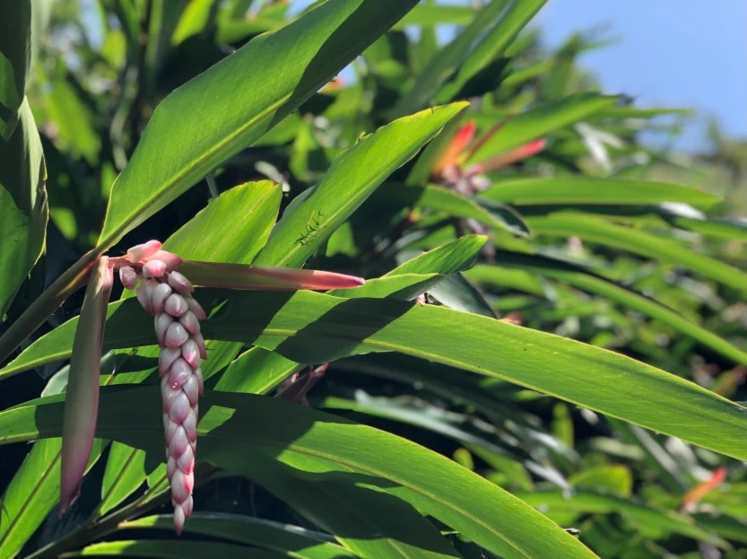
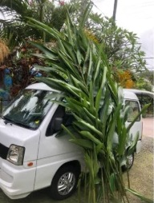
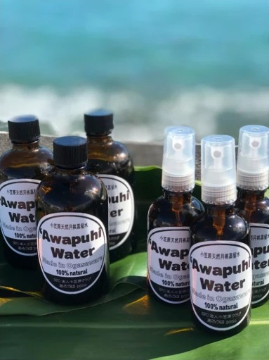
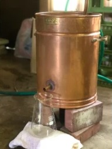
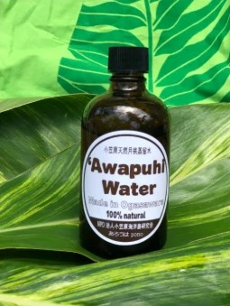
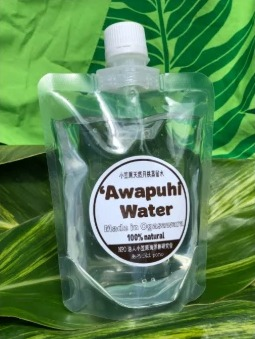

50ml入り スプレータイプ
- 通常価格
- 800円
- BOISS会員価格
- 500円
- リフィル（中身のみ）
- 400円

月桃は、ショウガ科ハナショウガ属（アルピニア属）の多年草です。原産地は東南アジアで、常緑多年草に分類されます。沖縄県や九州、海外では台湾やインドなど亜熱帯の南アジアに分布する多年草植物として有名で、独特の香りが特徴です。寒さに弱く、亜熱帯に群生しています。
月桃は独特の芳香をもち、世界にある芳香植物164種類の中のひとつに数えられているほど、香りの豊かな植物です。月桃が放つ独特の芳香は、気持ちをリラックスさせたり、心地よく毎日を過ごすのに大変役立ちます。

月桃の葉には殺菌、消毒、消臭効果があり、消臭剤や防虫剤としても重宝されています。楕円形の葉に含まれる独特の芳香成分には防虫・抗菌作用があり、殺菌・消毒効果があります。さらに防虫、防菌、防カビの効果から、虫よけやカビよけとしても使用されています。
この効能を活かして、お茶や虫よけスプレーに加工されるほか、葉のエキスには肌の弾力を保つコラーゲンの合成を促進する作用もあるとして、化粧水や美容液にも配合されます。
他にも、ポリフェノールは赤ワインの30倍、ミネラル（鉄、カルシウム、マグネシウム）、ビタミンC、食物繊維が豊富と言われています。
全て手作業で丁寧に行っています。
一枚一枚丁寧に葉を洗い、拭き上げ、葉の裁断、昔ながらの蒸留機にて丁寧に時間をかけて月桃蒸留水を作っています。






※ 父島では、ルルラニ、ハートロックにて販売中です。